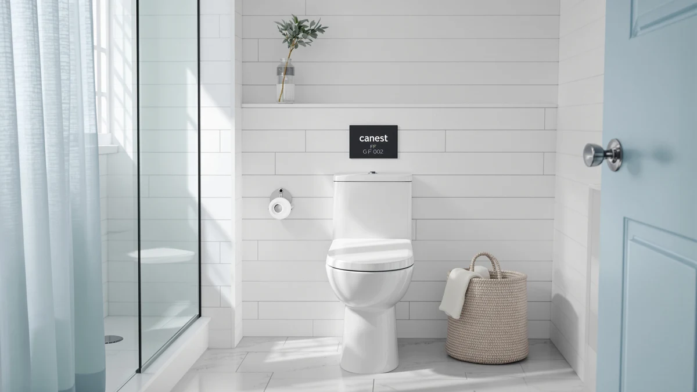

Quick Answer
The CANEST GF-002 Compact One Piece costs $219.99 and is built as a one-piece design with a compact footprint. This CANEST GF 002 compact review compares it against three lower-priced alternatives, including two compact one-piece toilets from DeerValley and an RV-specific model from SEAFLO, none of which has built up a public review history yet, so the deciding factors come down to price and category rather than star counts.
Our pick: CANEST GF-002 Compact One Piece ($219.99) Check Price on Amazon
Things to Know Before You Buy
- CANEST prices the GF-002 Compact One Piece at $219.99, the highest of the four toilets covered in this CANEST GF 002 compact review.
- It's a one-piece design, so the tank and bowl are molded together rather than bolted as separate parts, removing a seam where grime can collect.
- Two lower-priced DeerValley alternatives cover the same compact one-piece category at $199.00 and $179.00, and a SEAFLO RV toilet at $154.99 is built for mobile installations rather than a fixed bathroom.
- None of the four toilets in this comparison has a public rating or review count yet, so weigh the published price and category against that missing track record.
This CANEST GF 002 compact review breaks down whether the $219.99 CANEST GF-002 Compact One Piece earns its price against three lower-priced alternatives we compare it against on this site: two compact one-piece toilets from DeerValley and an RV toilet from SEAFLO. CANEST builds this model as a one-piece design with a compact footprint, molding the tank and bowl into a single piece rather than bolting two separate parts together like an older two-piece toilet. We pulled together everything CANEST publishes about this toilet, its $219.99 price, and its compact one-piece category, and set it beside three direct competitors so you can see exactly where your money goes.
The short version: if you want a compact one-piece toilet specifically from CANEST and don't mind paying the highest price in this group, the $219.99 CANEST GF-002 is a straightforward pick. But the DeerValley Compact One Piece Toilet undercuts it by $20.99 at $199.00, a second DeerValley Compact One Piece Toilet comes in $40.99 lower at $179.00, and the SEAFLO RV Toilet, an 18.4-inch model built for mobile installations rather than a standard bathroom, is the cheapest of the four at $154.99. Pick the CANEST GF-002 if a compact one-piece bathroom toilet from this specific brand is what you're after. Pick one of the three alternatives below if price matters more, or if you need a toilet built for an RV rather than a fixed bathroom. None of the four is a budget-tier product on its own, so this comparison mostly comes down to category fit and how much you value CANEST's specific listing over the competing options.
Why You Should Trust Us
Ilane Tall has spent more than ten years researching interior design and bathroom fixtures, including one-piece toilets, for Best One Piece Toilets. She built this CANEST GF 002 compact review by comparing CANEST's own published listing against the closest competitors on price and category, the same specification-comparison process the site uses for every review. We do not accept payment from CANEST, DeerValley, or SEAFLO to influence placement, and our Amazon links earn a commission only if you buy, which does not change what we recommend. Every price, product photo, and category cited in this CANEST GF 002 compact review comes directly from each manufacturer's own Amazon listing, not from a press sample or a sponsored placement.
How We Compared
For this CANEST GF 002 compact review, we started with CANEST's own product listing: the five product photos, its $219.99 price, and its compact one-piece category. We then lined up the GF-002 against the closest one-piece toilets already covered on Best One Piece Toilets, narrowing the field to two DeerValley Compact One Piece Toilets priced at $199.00 and $179.00, and an 18.4-inch SEAFLO RV Toilet at $154.99 built for mobile installations rather than a standard bathroom. None of the four has built up a public review history yet, so we weighted our evaluation toward the facts we could verify: published price, product category, and brand, rather than guessing at long-term durability we cannot confirm firsthand. That gap is also why we lay out each toilet's documented price and category side by side instead of ranking them on star counts that don't exist yet. We update this CANEST GF 002 compact review whenever Amazon changes any of the four listed prices, so the figures above reflect what each seller was charging at the time of our most recent check.
Overview & Specs

CANEST GF-002 Compact One Piece
What we like
- One-piece design molds the tank and bowl together, removing the seam where grime collects on a two-piece toilet
- Compact footprint suits smaller bathrooms better than a standard elongated two-piece toilet
- Listing includes five product photos from multiple angles, giving a clear look at the finish before you buy
- Single-piece construction typically means fewer parts to align during installation compared to a two-piece toilet
Flaws but not dealbreakers
- Priced $20.99 higher than the $199.00 DeerValley Compact One Piece Toilet, the closest alternative in this comparison
- No public rating or review count yet, so you're relying on CANEST's own listing rather than verified buyer feedback
- CANEST's listing doesn't specify rough-in distance or seat height, so confirm those measurements with the seller before you order
| Material | — |
| Size | — |
CANEST builds the GF-002 around a compact one-piece silhouette, molding the tank and bowl into a single piece rather than bolting two parts together. That single-piece build removes the seam between tank and bowl where grime typically collects on a two-piece toilet, and the compact shape is designed to fit smaller bathrooms better than a standard elongated model. At $219.99, it's the highest-priced toilet in this CANEST GF 002 compact review, though it competes directly with two lower-priced DeerValley alternatives and one RV-specific SEAFLO model.
CANEST hasn't published a rough-in distance, seat height, or flush rating for this specific listing. If those measurements matter to your bathroom, reach out to CANEST or the Amazon seller before you buy rather than assuming this model matches a standard 12-inch rough-in. CANEST does document the compact, one-piece design and the $219.99 price, backed by five product photos showing the toilet from multiple angles. It also hasn't built up a public review count yet, so weigh that documented design against the missing track record before you commit.
What We Liked
The CANEST GF-002's biggest strength is its compact, one-piece build. Molding the tank and bowl together removes the seam where grime collects on a two-piece toilet, and the smaller footprint fits a tighter bathroom better than the standard-size fixtures some competitors ship. CANEST backs the listing with five product photos from multiple angles, giving you a clearer look at the toilet's finish and shape than a single-image listing offers. A one-piece toilet like this one also tends to install with fewer separate parts than a two-piece model, which can simplify a bathroom renovation, a point worth weighing in this CANEST GF 002 compact review even before you compare it against the lower-priced alternatives below.
What Could Be Better
The biggest drawback in this CANEST GF 002 compact review is price relative to the field. At $219.99, this CANEST model costs $20.99 more than the $199.00 DeerValley Compact One Piece Toilet, $40.99 more than the $179.00 DeerValley Compact One Piece Toilet, and $65.00 more than the $154.99 SEAFLO RV Toilet, though that SEAFLO model is built for a different use case entirely. CANEST also hasn't listed a rough-in distance, seat height, or flush rating anywhere on this listing, so you can't line up those specs against the alternatives without contacting the seller first. The toilet has not accumulated any public rating or review count either, so we can't confirm long-term durability or real-world flush performance beyond what CANEST's own listing describes. None of that erases the compact design or the single-piece build that make this toilet worth considering, but weigh it against the cheaper alternatives below. If the flush rating and rough-in distance are dealbreakers for your renovation timeline, contact CANEST through the Amazon listing before you order rather than guessing at compatibility.
Who Is It For?
This toilet fits buyers who want CANEST's compact one-piece design badly enough to pay the highest price in the group for it. Anyone renovating a small bathroom where floor space is tight will find the compact footprint a straightforward match. Shopping mainly on price? The $199.00 and $179.00 DeerValley Compact One Piece Toilets in this CANEST GF 002 compact review cover similar one-piece ground for $20.99 to $40.99 less. And if you're outfitting an RV rather than a fixed bathroom, the $154.99 SEAFLO RV Toilet is built specifically for that use case, not a general bathroom replacement. Buyers who'd rather lean on verified reviews before spending $219.99 on a toilet should hold off, since none of the four models here has built up that history yet.
Alternatives to Consider
If the price or the missing review history gives you pause in this CANEST GF 002 compact review, these three toilets from DeerValley and SEAFLO cover the same compact category, plus one RV-specific option, for less money.

Editor’s Pick
DeerValley Compact One Piece Toilet
This DeerValley compact one-piece toilet undercuts the CANEST GF-002 by $20.99, worth considering if you want the same compact category for less.
$199.00
Check Price on Amazon
Best Value
DeerValley Compact One Piece Toilet
DeerValley's second compact one-piece toilet drops to $179.00, a $40.99 difference from the CANEST GF-002 pick above.
$179.00
Check Price on Amazon
Premium Choice
SEAFLO RV Toilet – 18.4"
This SEAFLO RV toilet is built for mobile installations rather than a fixed bathroom, and it's the cheapest option in this comparison at $154.99.
$154.99
Check Price on AmazonFrequently Asked Questions
Is the CANEST GF-002 Compact One Piece worth $219.99?
It's worth $219.99 if you want CANEST's compact one-piece design specifically. If price matters more than the brand, the $199.00 DeerValley Compact One Piece Toilet in this CANEST GF 002 compact review saves you $20.99, and the $179.00 DeerValley model saves $40.99.
How does the CANEST GF-002 compare to the DeerValley Compact One Piece Toilets?
DeerValley lists two compact one-piece toilets in this comparison at $199.00 and $179.00, both cheaper than CANEST's $219.99 GF-002 by $20.99 and $40.99. All three share the same compact one-piece category, so the decision mostly comes down to brand and published price rather than a difference in design.
Is the SEAFLO RV Toilet a substitute for the CANEST GF-002?
The SEAFLO RV Toilet isn't a direct substitute since it's an 18.4-inch model built for mobile installations like RVs and boats, while the CANEST GF-002 in this CANEST GF 002 compact review is designed for a standard fixed bathroom. Compare them on price only if you're deciding between a home renovation and an RV upgrade.
Final Verdict
This CANEST GF 002 compact review comes down to a straightforward trade-off. CANEST's compact one-piece toilet has a seamless, space-saving build at $219.99, the highest price among the four models we compared, and without the public review history that would let us confirm long-term durability firsthand. If a compact one-piece toilet from this specific brand matters to you, the CANEST GF-002 is a sound buy at that price. If you'd rather save money or need a toilet built for an RV, the DeerValley and SEAFLO alternatives above are worth a look.